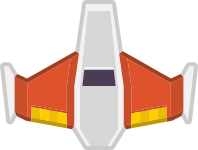
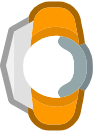
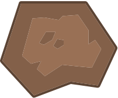
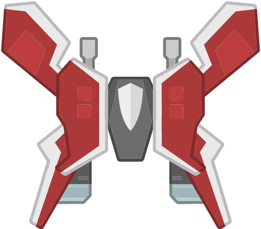

A phone game written in xTalk
Fly the rescue cutter through a field of meteors and raiders. Catch the drifting crews, keep your streak alive for a bigger bonus, and face a mothership every fourth sector.
- Touch: slide a finger anywhere to fly
- Mouse: drag to fly
- ←→↑↓ or WASD fly
- Space or Enter play
- P or Esc pause
- Fire: the cutter fires on its own
How it plays The same rules on a phone, a tablet and a computer

Drag to fly
Put a finger anywhere and slide it: the cutter moves as your finger does, and fires on its own.

x5Rescue the crew
Fly over the drifting astronauts. Each rescue in a row raises your bonus, up to x5; one that drifts away starts it again.

Dodge and blast
A meteor, a raider or a shot takes a hull point. Lose all three and the run is over.
Grab power-ups
Raiders sometimes drop twin lasers, a shield or a repair.
Clear each sector
Rescue a sector's crew to clear it, for a bonus and a star. Each sector asks for one more.

The mothership
Every fourth sector ends with a mothership. Wear it down while the crews keep drifting in.
Made with OXT-Beyond One stack, no web code
Written in xTalk
The whole game is one stack in xTalk Script: its screens, its ships and its rules. It is one of the Stack Player's samples, so it plays there too.
Made for phones
The Mobile Web library gives it the whole screen on a phone, keeps it clear of the notch, and lays it out again when the phone turns.
Sound in the browser
Its sounds are mixed by the browser's Web Audio, called from the stack's script, so they play at once on a phone too.